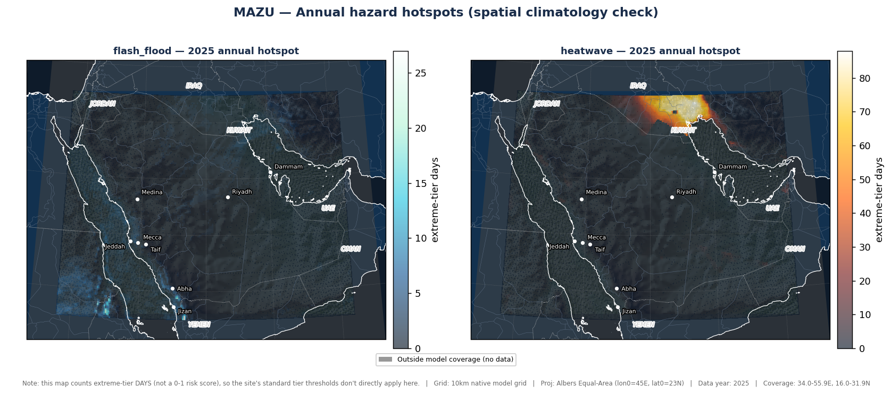
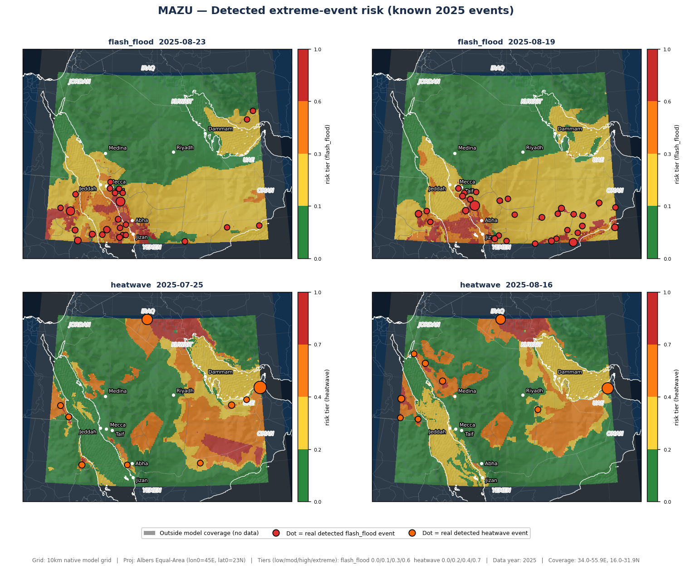
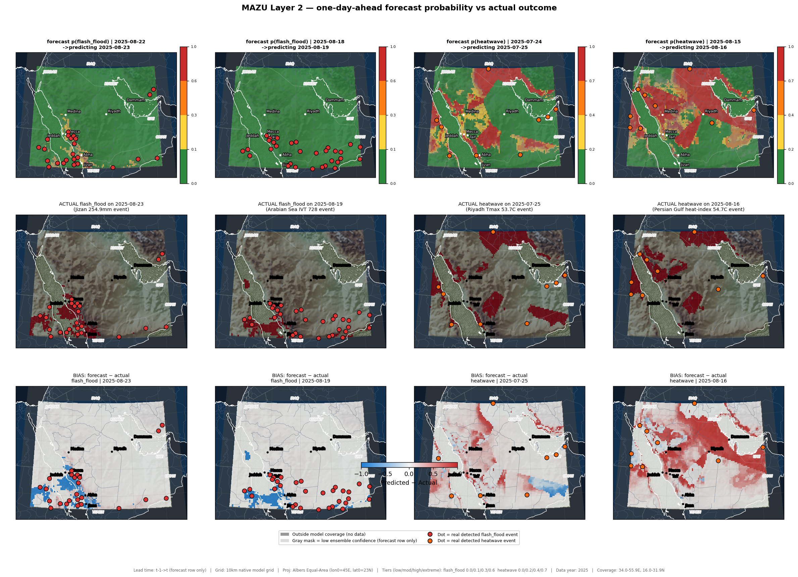
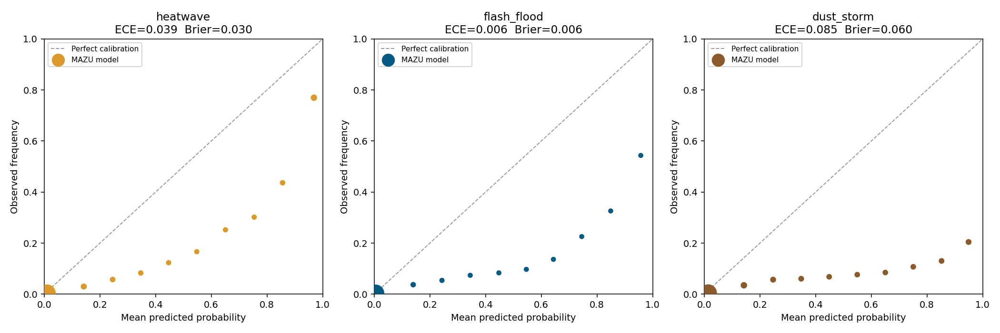
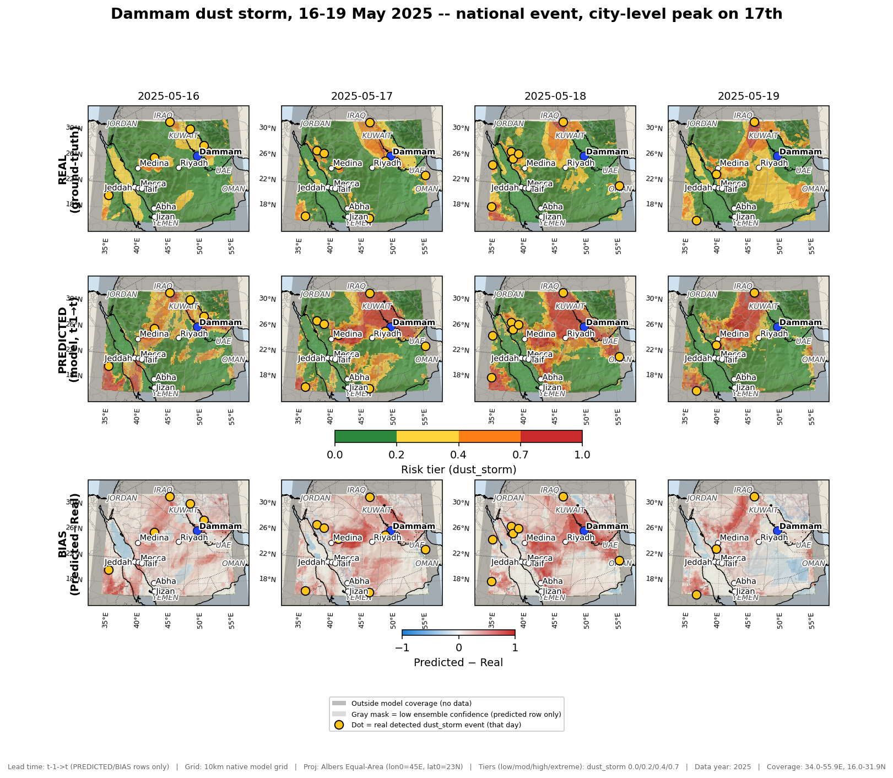
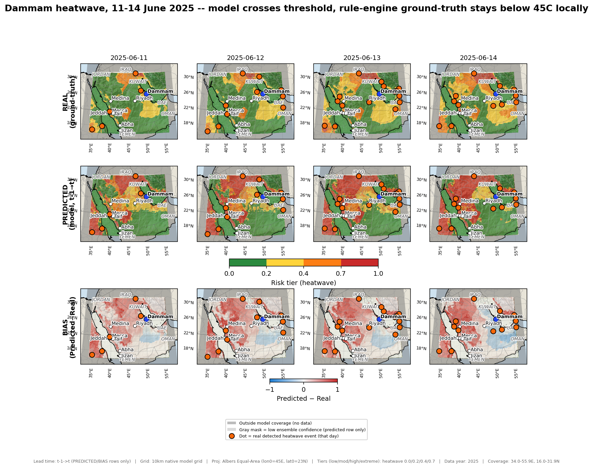
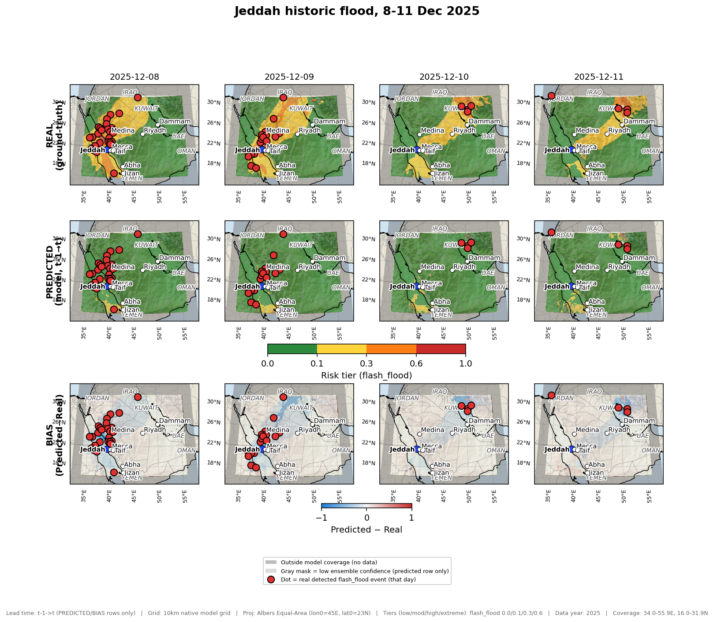

Extreme-weather early-warning system for flash floods, heatwaves, and dust storms — built on CMA 10 km meteorological indicators, a causal knowledge graph, and data-grounded detection.
A weighted, spatially-clustered detection engine flags flash-flood and heatwave events across the Saudi grid. Validated against known 2025 events and a spatial-climatology check.


An interactive causal knowledge graph links indicators, hazards, driving mechanisms (Red Sea Trough, moisture transport, orographic lifting) and real events — with data-driven correlations that recover known physics (e.g. sea-surface temperature ↔ convective instability). 4 of 5 mechanisms are now grounded in verbatim-verified quotes from 6 real, peer-reviewed publications (e.g. de Vries et al. 2013, JGR-Atmospheres, on the Active Red Sea Trough) — not just domain assertions.
Open the interactive knowledge graph →A gradient-boosted spatiotemporal model predicts tomorrow's hazard risk from today's indicators (train on Jan–Jun 2025, test on unseen Jul–Dec) — genuine forecasting, not same-day detection. Verified with threshold-independent metrics, known-event checks, and negative controls; a spatial neighbour-context feature and a graph-neural-network variant were also tested and are reported honestly below.


model/10_calibration_fix.py): Brier score improved for all 3 hazards, but kept as a documented, tested finding rather than deployed to production — swapping calibrated probabilities would shift ~150 already-verified test/audit numbers and CAP's own severity thresholds, which are tuned to the raw scale. See agent/CALIBRATION_REPORT.md.Per-city time series answer "was this city's forecast right on this day" — they don't show whether the risk field's shape across the map is right. These maps pair two independently-computed layers for 3 real, officially-reported 2025 events: REAL (the rule-engine ground-truth risk score, computed at every grid cell independently of the ML model) and PREDICTED (the trained model's forecast probability, evaluated at every grid cell rather than just the 8 city points — verified to reproduce the live agent's own forecast tool exactly, to 4 decimal places, across 10 spot checks before being trusted here).



A DeepSeek function-calling agent wires the forecast model, the literature-grounded causal knowledge graph, and live conditions into one assistant. Every probability, mechanism and citation it states comes from an actual tool call — never invented. This is what makes the knowledge graph functional rather than just browsable: the agent queries it programmatically on every question, the same way a production detection system would.
See real worked examples →agent/ABLATION_REPORT.md.agent/REFLEXIVE_CHECK_REPORT.md.agent/DUST_STORM_REPORT.md.region_risk_tool, was added to use the previously-idle at_risk_of/exposed_to edges, raising usage to ~40% and surfacing a genuine pre-existing KG data-quality gap along the way. See agent/REGION_RISK_REPORT.md.cap_alert_tool converts a forecast into a real CAP 1.2 (Common Alerting Protocol, the OASIS standard MAZU's own national framework is built on) XML alert, ready for broadcast/siren/SMS infrastructure — severity from the detection engine's own thresholds, certainty from the reflexive check's model/rule-engine agreement, and status hardcoded to Exercise (never Actual) since this is a historical-dataset demo, not a live feed. See agent/CAP_REPORT.md.agent/METEOROLOGICAL_METRICS_REPORT.md.forecast_tool now returns a 4th field, uncertainty (mean/std/range across the same 5 independently-trained models), purely as added context alongside the unchanged production probability. Large disagreement among 5 otherwise-identical models is a genuine, per-query confidence signal, distinct from the reflexive rule-engine check and the threshold-based POD/FAR/CSI/HSS above — and since no decision-relevant number moves, nothing already verified changes. See agent/UNCERTAINTY_REPORT.md (and agent/ENSEMBLE_REPORT.md for the averaging attempt that was tested and rejected).literature_evidence_tool searches a 12-entry literature pool (7 extraction-corpus entries + 5 newly researched) via plain TF-IDF similarity, labeling every result verified: false until a human promotes it through the same verbatim-quote pipeline the original citations passed. See agent/LITERATURE_EVIDENCE_REPORT.md.365 daily files, 10 km grid, 20 core reliable indicators.
doneCausal, mechanism-aware, data-grounded events.
doneWeighted rules + spatial clustering, verified.
donet→t+1 spatiotemporal model, verified against known events.
doneDeepSeek function-calling, grounded in the model + KG.
done{kind=link}
{kind=link}
{kind=link}